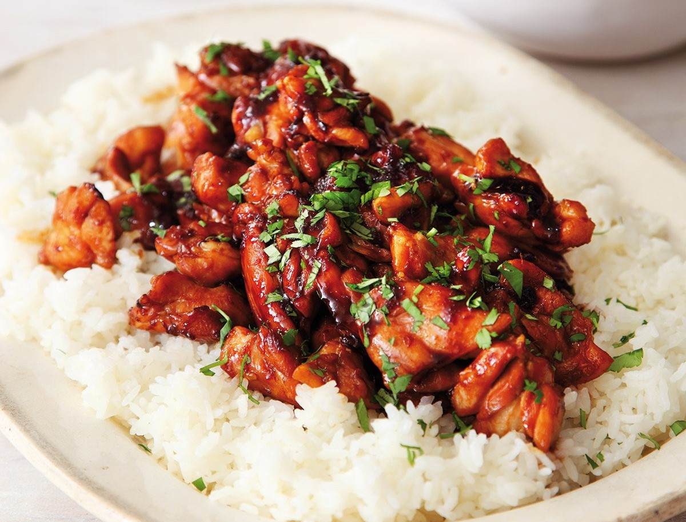

Krishi's juicy delicious meat- I Mean!- Chicken Teriyaki

"Marinade highly recommended, time required: 24 hours!"
Ingredients
- 2-3 Chicken Breasts or Thighs
- 2 Cups of Soy Sauce
- 3tbs Toasted Sesame oil
- 3tbs Rice Vinegar
- 3 Stalks of chopped Green onion
- 2 cloves of garlic
- 1tbs shredded ginger
- Cooked Rice
- Large Ziploc Bag
- 2tbs of Light Brown Sugar per Chicken limb
Directions
In the ziploc bag, toss in the chicken breast(s),
1/2 cup of soy sauce, chopped green onion, 2 cloves are
garlic (no chopping required), Sesame oil, ginger,
and rice vinegar. Seal the bag with as little air
as possible, and marinade for 24 hours or overnight.
Bring a steel or cast iron pan to a medium temperature, and
sear each side of the chicken. With scissors and tongs, cut
the chicken into bite sie pieces. The chicken should be mostly
if not fully cooked. Lower the temperature to low and toss in
the rest of the Soy Sauce with the Light brown sugar. Mix slowly
for 3-6mins. Serve with cooked rice. (top with green onions for aesthetics)